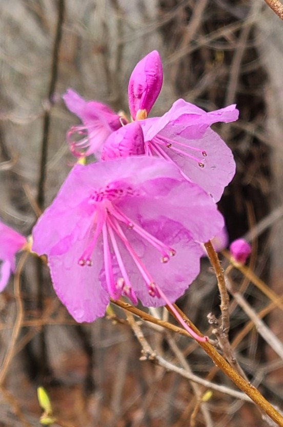
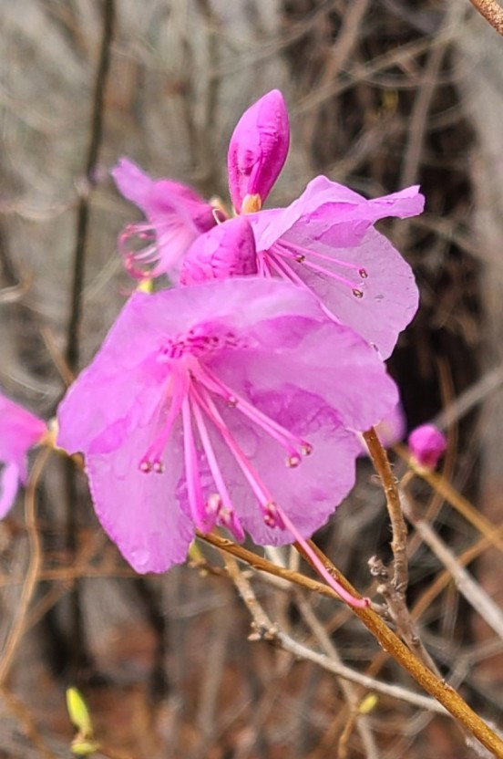
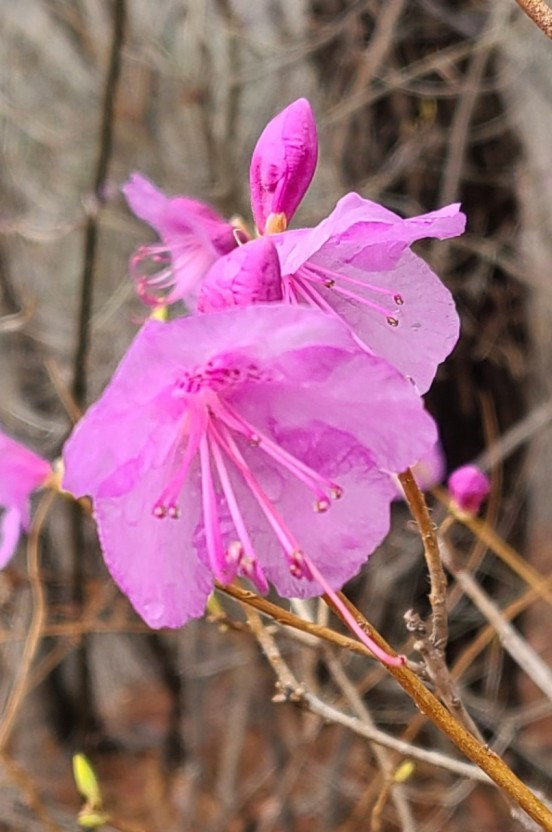

<img src ="img_flower.jpg "alt ="진달래 꽃 "> <img src ="image/img_flower.jpg "alt ="진달래 꽃 ">
 

HTML <
그림은 웹 문서에 삽입되지는 않는다. 그림은 웹 문서에 참조로 연결된다.
<
<
<
참고 : 웹 페이지가 로드 될 때 웹 서버에서 이미지를 가져와 페이지에 삽입하는 것은 브라우저이다. 이미지가 실제로 웹 페이지와 관련하여 url이 일치하지 않으면 방문자의 웹 브라우저에 끊어진 링크 아이콘이 표시되고, alt 에 지정한 대체글이 표시된다.
<img src ="img_flower.jpg "alt ="진달래 꽃 "> <img src ="image/img_flower.jpg "alt ="진달래 꽃 ">

첫 번째 <
브라우저가 이미지를 찾을 수 없는 경우 alt 속성 값이 표시된다. 뿐만 아니라 시각 장애가 있거나 학습 장애가 있는 사람들에게 화면 판독기 또는 스크린 리더로 하여금 HTML 코드를 읽고 사용자가 문서의 내용을 들을 수 있도록 한다.
<img src ="image/img_flower.jpg "alt ="진달래 꽃 "width ="110 "height ="166 ">
<img src ="image/img_flower.jpg "alt ="야생화 "style ="width: 150px; height: 100px; ">

width와 height 속성으로 크기를 설정한 경우에 CSS에서 그림의 크기를 설정하면 바뀌게 되므로 style 속성을 사용하면 이것을 막을 수 있다.
<!DOCTYPE html > <html > <head > <style >img {width :100% ; } </style > </head > <body > <img src ="img_firstlove.jpg "alt ="야생화 "width ="150 "height ="100 "> <img src ="img_firstlove.jpg "alt ="야생화 "style ="width:150px;height:100px; "> </body > </html >
<a href ="default.html "> <img src ="image/img_home.png "alt ="Go Home image "style ="width: 120px;width: 40px; "> </a >
CSS float 속성을 사용하여 그림이 글의 오른쪽 또는 왼쪽에 배치할 수 있다.
<p > <img src ="image/img_firstlove.jpg "alt ="야생화 "style ="float: right;width: 75px;height: 50px; "> 이 그림은 글의 오른쪽에 배치된다. 이 그림은 글의 오른쪽에 배치된다. 이 그림은 글의 오른쪽에 배치된다. </p > <p > <img src ="image/img_flower.jpg "alt ="진달래 꽃 "style ="float: left;width: 55px;height: 80px; "> 이 그림은 글의 왼쪽에 배치된다. 이 그림은 글의 왼쪽에 배치된다. 이 그림은 글의 왼쪽에 배치된다. </p >
이 그림은 글의 오른쪽에 배치된다.
이 그림은 글의 오른쪽에 배치된다.
이 그림은 글의 오른쪽에 배치된다.
이 그림은 글의 왼쪽에 배치된다.
이 그림은 글의 왼쪽에 배치된다.
이 그림은 글의 왼쪽에 배치된다.
모든 브라우저 (Chrome, Edge, Firefox, Safari, Opera)에서 지원되는 가장 일반적인 그림 파일 유형
| 약어 | 파일 형식 | 파일 확장자 |
|---|---|---|
| APNG | 휴대용 애니메이션 네트워크 그래픽 | .apng |
| GIF | 그래픽 교환 형식 | .gif |
| ICO | Microsoft Icon | .ico, .cur |
| JPEG | 사진 전문가 공동 그룹 이미지 | .jpg, .jpeg, .jfif, .pjpeg, .pjp |
| PNG | 휴대용 네트워크 그래픽 | .png |
| SVG | 확장 가능한 벡터 그래픽 | .svg |
참고 : 큰 그림을 로드하려면 시간이 걸리며 웹 페이지 속도가 느려질 수 있다.
HTML 이미지 맵을 사용하면 이미지에서 클릭 가능한 영역을 만들 수 있다.
HTML <
이미지 맵을 만들려면 문서에 <
usemap 속성의 값은 hash (#)로 붙인 이미지 맵의 이름이다.
<
shape="
<img src ="./image/img_menu.png "alt ="image menu "usemap ="#linkmap "> <map name ="linkmap "> <area shape ="rect "coords ="0, 0, 200, 54 "href ="/ "alt ="image Home "> <area shape ="rect "coords ="201, 0, 400, 54 "href ="default.html "alt ="image 방명록 "> <area shape ="rect "coords ="401, 0, 600, 54 "href ="default.html "alt ="image 게시판 "> <area shape ="rect "coords ="601, 0, 800, 54 "href ="default.html "alt ="image 알림 "> <area shape ="rect "coords ="801, 0, 1000, 54 "href ="default.html "alt ="image 축하 ">/map >
맵으로 사용할 원의 중심좌표(
<img src ="img_map.jpg "alt ="image map "usemap ="#linkcircle "> <map name ="linkcircle "> <area shape ="circle "coords ="x-axis, y-axis, radius "href ="url "alt ="image circle ">/map >
<img src ="image/img_firstlove.jpg "alt ="야생화 "usemap ="#linkcircle "> <map name ="linkcircle "> <area shape ="circle "coords ="420, 220, 160 "href ="image/img_firstlove.jpg "target ="_blank "alt ="꽃말 첫사랑 "style ="width: 800px;height: 500px; "> </map >
꽃 주위에 원형 링크 설정

맵으로 사용할 모든 꼭지점의 좌표(
<img src ="img_map.jpg "alt ="image map "usemap ="#linkpoly "> <map name ="linkpoly "> <area shape ="poly "coords ="x1, y1, x2, y2, x3, y3, x4, y4, x5, y5, "href ="url "alt ="image poly ">/map >
<img src ="image/img_firstlove.jpg "alt ="야생화 "usemap ="#linkpoly "> <map name ="linkpoly "> <area shape ="poly "coords ="460,20, 435,172, 580,185, 390,261, 164,190, 300,190, 250,110, 338,170, 390,96 "href ="image/img_firstlove.jpg "target ="_blank "alt ="꽃말 첫사랑 "style ="width: 800px;height: 500px; "> </map >
꽃잎에만 다각형의 링크 설정
<img src ="image/img_flower.jpg "alt ="진달래 "usemap ="#mapflower "style ="width: 276px;height: 416px; "> <map name ="mapflower "> <area shape ="circle "coords ="110, 200, 100 "href ="image/img_flower.jpg "target ="_blank "alt ="진달래 꽃 "onclick ="alert('나보기가 역겨워 가실 때에는 \n영변의 약산 진달래 꽃 \n아름따다 가실 길에 뿌리오리다') "> </map >
그림의 꽃을 클릭하면 원본 그림이 보여집니다.
거의 모든 HTML 요소에 대해 배경 이미지를 지정할 수 있다.
HTML 요소에 배경 이미지를 사용하려면 HTML style 속성과 CSS background-image 속성을 사용하여 지정한다.
HTML div 요소에 배경 이미지 추가 :
<div style ="background-image: url('./image/img_bg.png'); ">
<head > <style >body {background-image :url('image/img_bg.png') ; } </style > </head >
배경 이미지가 요소보다 작으면 이미지가 요소의 끝에 도달할 때까지 가로 및 세로로 반복된다.
배경 이미지가 반복되지 않도록하려면 background-repeat 속성을 no-repeat 로 설정한다.
<head > <style >body {background-image :url('image/img_bg.png) ;background-repeat :no-repeat ; } </style > </head >
배경 그림이 전체 요소를 덮도록하려면 background-size 속성을 다음과 같이
또한 전체 요소가 항상 덮여 있는지 확인하려면 background-attachment 속성을
<head > <style >body {background-image :url('image/img_flower.jpg') ;background-repeat :no-repeat ;background-attachment :fixed ;background-size :cover ; } </style > </head >
배경 그림이 전체 요소에 맞게 늘어나도록 하려면 background-size 속성을
<head > <style >body {background-image :url('image/img_flower.jpg') ;background-repeat :no-repeat ;background-attachment :fixed ;background-size :100% 100% ; } </style > </head >
화면 크기에 따라 다른 그림을 보여준다. 그리고 지정한 그림을 보여줄 수 없는 경우 대체 그림을 보여준다.
<picture > <source media ="(min-width:1280px) "srcset ="image/img_flower.jpg "> <source media ="(min-width:800px) "srcset ="image/img_firstlove.jpg "> <img src ="img_flower.png "alt ="flower "style ="width: auto; "> </picture >
화면의 크기를 늘이거나 줄이면 다른 그림이 보여진다.

그림(picture) 요소를 사용하는 경우 작은 화면의 장치에 큰 이미지 파일을 로드할 필요가 없다. 브라우저는 <
일부 브라우저 또는 장치는 모든 이미지 형식을 지원하지 않을 수 있다. <